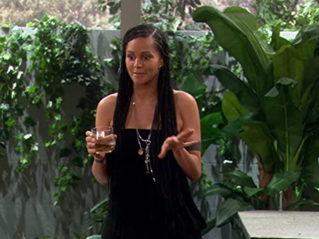
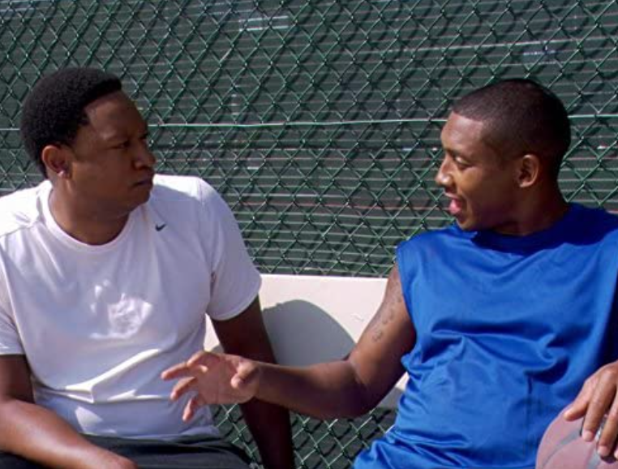
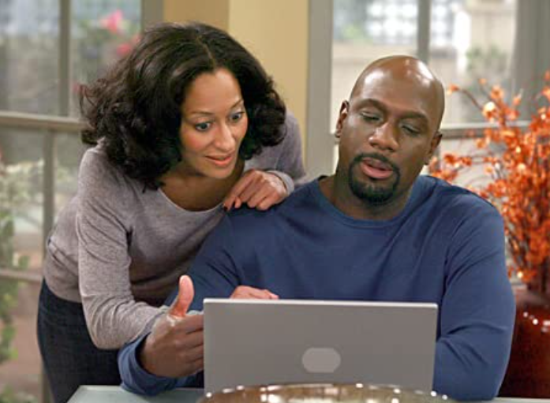
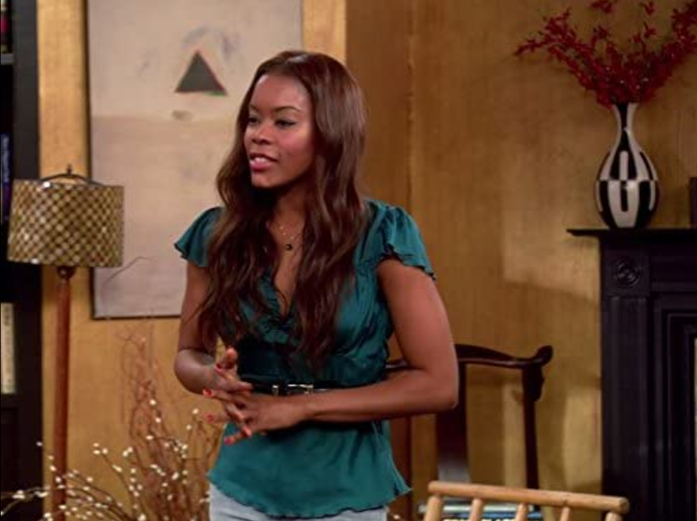
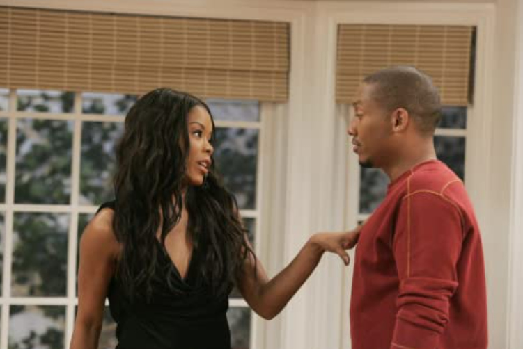

Episodes
Season 1

EP0: Pilot
Joan Clayton is at the great peak of her life. She is almost 30, is almost junior partner at her law firm, and has a great friend circle. She hires a woman named Maya Wilkes as her assistant, and has had a friendship with one of her colleagues, William, for over three months. But Joan is going crazy that she hasn't had a man for a year and her plan was to be married by now. Her friends, egotistical Toni Childs, and lazy 27-year-old college student named Lynn, have to cheer Joan up and get her a man, with the help of Maya whom Toni calls "ghetto".

EP1: Toe Sucking
Joan Clayton, a successful attorney, prepares to celebrate her 29th birthday (although she claims to be 26 to make her achievements seem more impressive). Toni, Joan's best friend, begins dating Charles, a venture capitalist with a propensity for toe-sucking who dated Joan until he freaked out at the prospect of marriage. Toni tries to hide the truth, but their friend Lynn forces her to confess to Joan. Joan claims she has no problem with Toni bringing Charles to her birthday party; but then brings her friend and colleague, William, to try to make him jealous. Joan is furious to learn that Charles is now interested in settling down, and the evening comes to a screeching halt. Meanwhile, Toni constantly clashes with Maya, Joan's assistant.

EP2: One Night Stand?
After Joan reveals that she hasn't had sex in a year, her friends push her to go for a one-night stand. Joan is reluctant because she generally doesn't sleep with anyone until she has been in a relationship for three months, but tries to make a move on Davis Hamilton, a handsome man who owns the restaurant the girls frequent. She convinces Davis to drive her home and makes a pass at him, only to learn that he is engaged. Although nothing happens between them, Joan tells Toni and Lynn that she slept with him. When the girls blab the news around town, Davis' fiancée dumps him, leaving Joan to struggle for a way to clean up the mess.

EP3: Girlfrenzy
Toni and Maya get into another argument before an evening out, in part because Toni refuses to believe that Maya can get the girls into an exclusive club. Toni tries to gain admission to the club and fails. Maya shows up and easily gets herself, Joan, Lynn and William past the doorman. Joan convinces the reluctant Maya to also get Toni into the club. When the doorman waves to Toni, another woman believes the wave was meant for her, and they get into an argument. Joan tries to play peacemaker, but the situation turns into a brawl. Maya and Lynn jump into the fight, but Toni is hurt by the fact that Joan fails to back her up. She begins to question their friendship, so Joan searches for a way to patch things up.

EP4: Hip-Ocracy
Joan, Toni and Lynn set up dates with men they met over the Internet. Lynn's guy never shows up (his parole was denied), while Toni rejects hers because his skin is too dark. Although conspiracy theorist Maya warns that he will turn out to be a serial killer, Joan is pleased with her date, Marcus. Joan freaks out after discovering that Marcus wears a girdle because he has large hips, prompting Toni (who had taken heat from the girls over her treatment of her date) to take her to task for her behavior. Meanwhile, William also uses the Internet in an attempt to find love. He finally gets a date, but the woman seems to be completely crazy.

EP5: I Pity the Fool
Joan grows tired of the clingy Marcus and plans to break up with him, but only winds up complicating the situation by having "pity sex" with him. The girls try to help her out by bombarding Marcus with negative facts about Joan in the hopes that he will dump her. Meanwhile, Maya gets involved in a get-rich-quick scheme.